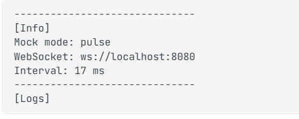

6. Mockdata voor de ademriem
Ik wilde de app kunnen testen zonder riem.
zo 1 november (eerste versie), ma 2 november (concept) en di 3 november 2026 (betere versie)
Waarom een mock
- Samenwerken. Rio maakte een mock voor de pulssensor, dus ik maakte er ook een voor de ademriem.
- Het festival. Bij het Society 5.0 festival kun je de riem niet elke keer opnieuw instellen. Dat kost te veel tijd.
- Testen. Ik was nog bezig om Reachy de riem goed te laten aflezen, en met een mock kan ik testen zonder riem.
Wat ik maakte
Ik voegde op zo 1 november een bestand breathing.js toe aan de Node.js mock-server (mock.js). De server vindt elk bestand in de map modes/ zelf, dus ik hoefde de server niet aan te passen. Starten doe je met node mock.js --breathing.
De eerste versie stuurde alleen t en v, 100 keer per seconde. Die gebruikte ik om te zien of de verbinding echt draaide. Op ma 2 november schreef ik het idee voor een betere versie op, maar dat was nog een concept. Op di 3 november voegde ik de betere versie toe.

ws://localhost:8080. Mijn ademmock gebruikt dezelfde server.Probleem. De eerste versie leek niet op de echte riem. De sinus loopt 0,15 per meting bij een interval van 10 ms, dus één ademhaling duurt 0,42 seconde. Dat is ongeveer 143 ademhalingen per minuut, terwijl een mens er 12 tot 20 doet. De mock stuurde ook alleen t en v, terwijl de echte ESP32 ook state, rate en depth stuurt.
Oplossing. In de betere versie stuur ik 20 metingen per seconde (net als de echte riem), precies 15 ademhalingen per minuut, en de velden state, rate en depth. Ik testte de generator met Node. In 60 seconden telde ik 15 ademhalingen.
Tip
De mock-server luistert alleen op 127.0.0.1, dus alleen mijn eigen laptop kan er verbinding mee maken. In .env zet ik BREATHING_SENSOR_HOST=localhost:8080.
Wat ik hieruit leer
Mockdata is alleen nuttig als het op de echte data lijkt. Ik had de getallen eerder moeten controleren in plaats van te denken dat een sinus goed genoeg is.
Bronnen
- ws, een Node.js WebSocket-bibliotheek. https://www.npmjs.com/package/ws
- Mocking Sensors (Team9 Documentation), de mock-documentatie van het team.